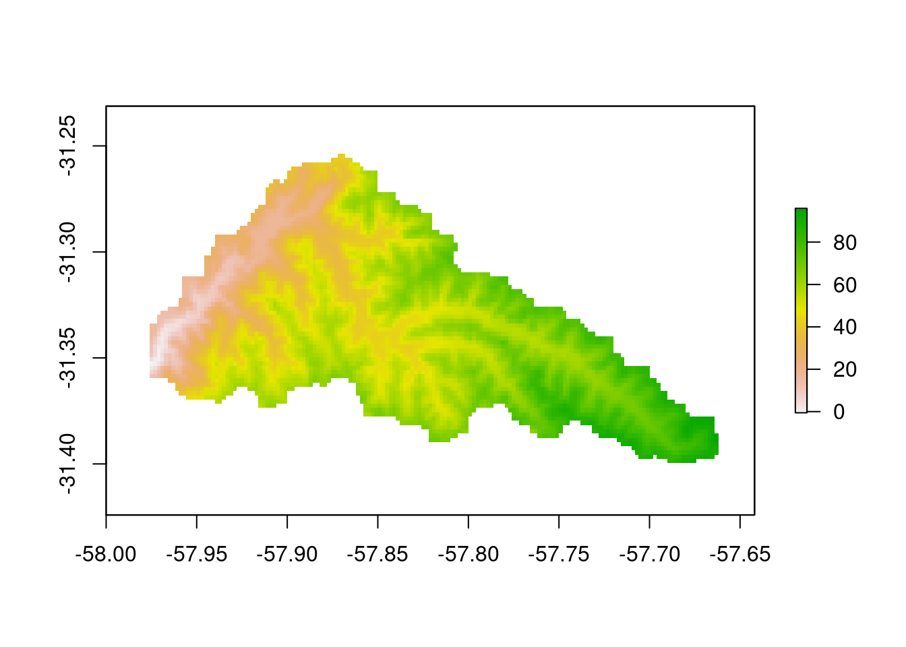
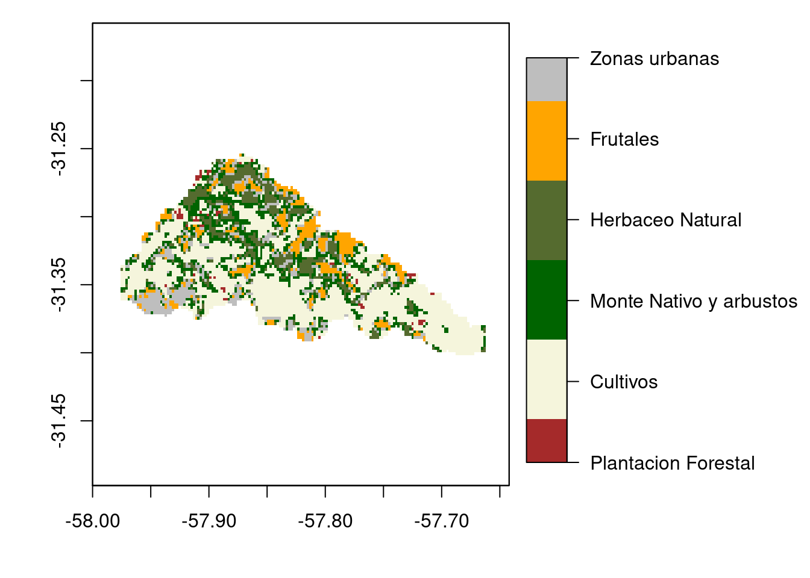
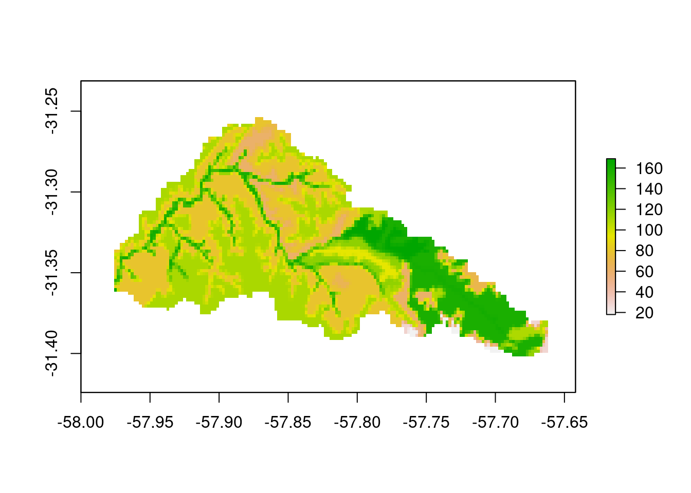

A continuación se muestran los mapa de relieve, uso y tipo de suelo y FC que usa el modelo.
library(raster)
dec = CRS("+init=epsg:4326")
dem = raster("./docs/data/wflow_dem.map")
crs(dem) = dec
plot(dem)
El uso del suelo se engloba en las siguientes 6 categorías:
uso = raster("./docs/data/wflow_landuse.map")
crs(uso) = dec
# Agregación de atributos
values(uso)[values(uso)==3] = 2
values(uso)[values(uso)%in%c(4,5,9)] = 3
values(uso)[values(uso)==6] = 4
values(uso)[values(uso)==10] = 5
values(uso)[values(uso)%in%c(7,8,11,12,13)] = 6
# Atributos
uso_lab = c("Plantacion Forestal",
"Cultivos",
"Monte Nativo y arbustos",
"Herbaceo Natural",
"Frutales",
"Zonas urbanas")
arg <- list(at=1:6, labels=uso_lab, pos="bottom")
par(mar=c(4,4,1,1))
plot(uso, col = c("brown","beige", "darkgreen", "darkolivegreen", "orange", "gray"),
smallplot=c(0.65,0.7, 0.2,0.9),
axis.args=arg,
legend.args=list(text="",side=4, font=2, line=2.5, cex=0.8))
suelo = raster("./docs/data/wflow_soil.map")
crs(suelo) = dec
plot(suelo)